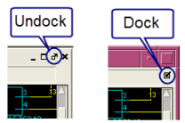

Examining the Calibre PERC SVDB
Prerequisites
Calibre PERC results are open in Calibre RVE. See “Opening Calibre PERC Results in Calibre RVE”.
(Optional) The layout database for your Calibre PERC run open in a layout viewer that is connected to Calibre RVE. This is useful if your analysis was done on the layout database using layout netlist extraction. See “Connection to a Design Tool”.
Case is handled correctly in the rule file; see “Case Sensitivity in Calibre RVE”.
Procedure
- In the Tree View of the PERC
Results tab, expand a tree node as needed or click the Group By icon (
 ) to
change the grouping hierarchy. See “Grouping Results in Calibre RVE for PERC”.
) to
change the grouping hierarchy. See “Grouping Results in Calibre RVE for PERC”. - Select a result in the Result
View.
The reporting of multiple placements of a hierarchical result depends on the setting of “Show only one placement for each hierarchical PERC result” on the
 Options tab, LVS/PERC/PEX category:
Options tab, LVS/PERC/PEX category: Enabled — Only the first placement is displayed.
Disabled (default) — All placements are displayed.
See these topics for further information:
“Viewing Separate Placements of a Result in the PERC Results Tab”
“Speeding Up Database Loading by Viewing One Placement of Results in Calibre PERC”
- In the Result Data Pane, click
an element in blue text to display the element in the Internal Schematic Viewer or an attached external schematic
viewer. The design element is also highlighted in your layout viewer
if one is connected.
In the Internal Schematic Viewer, use the
 (zoom
to fit) navigation button to resize and center the image, if necessary.
(zoom
to fit) navigation button to resize and center the image, if necessary. Tip: You can choose the arrangement of the schematic windows from the Window menu. The schematic viewer windows can be undocked from the main session window with the control shown on the right. The selection Window > Dock All returns all undocked windows to the main display.
